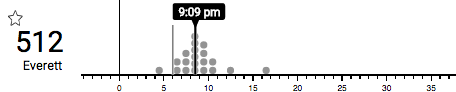
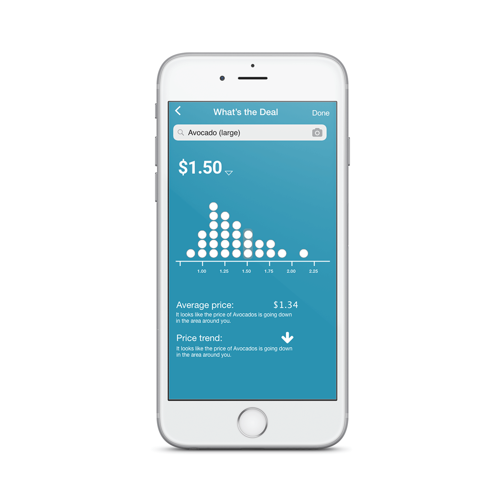

Uncertain Bus
Data driven decision making can often challenge people unfamiliar with data and statistics. Visualization can help all people understand data quickly but, creating a visualization that allows people to understand the data correctly for a given context remains a challenge. Using Real Time Transit data as a case study where people make fast and accurate decisions, I used a user-centered design process to design and test visualizations that users could use on a mobile phone.

Result
Quantiative metrics collected in a controlled experiment found that:
Review this paper published in the ACM conference on Computer-Human Interaction 2018 to find out more about my role as a researcher on this project. This post focuses on my role as a designer.
So... what's the problem?
Representing machine learning or statistical models and predictions to users may hard. Even a graph as wide known as a bell curve can present diffculties. Users might think they understand the graph but the difficulty of making a decision around the representation might uncover an error in their interpretation.
Uncertain Bus expands on past research done on establishing best pracitices for presenting uncertainity information from machine learning system to bus riders. Using past research that established feasibility and design criteria for displaying uncertainity in realtime data, my team and I began by brainstorming possible visualizations and representations that we could add to the popular trip planning app OneBusAway.
Whats hard about deciding when to leave for the bus?
- Sara looks at OneBusAway to find her bus is predicted to arrive in 10 minutes. She decides to arrive at the stop in 9 minutes. Two things could happen:
- Scenario A: A bus might come later : a bus may spend an abnormal time at a red light or a frazzled passenger might struggle to find the last quarter in his back pocket.
- Scenario B: A bus could come earlier : a bus may catch consecutive green lights or ridership may be below normal.
- In both scenarios, events outside of Sara's control affect her decision. Sara either spends extra time at a bus stop or misses the bus altogether.
Framing the Requirements
The intial goal of this project was to provide proof that people can use uncertainity information to make better decisions, specifically around realtime information. To achieve the goal, I set the following design goals:
- Mantain the look and feel of current Trip Planning apps(OneBusAway was used as a reference).
- Mantain a glanacable interface that can be used to make in the moment decisions.
As a team we spent much time deliberating what types of visualizations to include in my designs. Visualizations might provide too much information or too little information for a user to make a decision. Ultimately we agreed on 6 unique representations include: Dot plots, density plots, interval(box and whisker) plots, interval density plots, cumulative density function and natrual language representations.
Thinking Modularly

Since the basic parameters of the interface we're already set, I began by breaking down the larger interface into smaller components, I knew the final design would include. These pieces became the building blocks that I fit together, like a puzzle, to find the correct layout.

From the pieces mentioned previosuly, I created rapid iterations of the layout. I choose to use stand in information at this point in the design because the layout of information matters. In this context, what each informational piece means in the context of the larger interface determined the necessary form of the layout.
Connecting With Riders
To mimic the same look, feel and most importantly, the information displayed on OneBusAway(OBA), I adapted the Uncertain Bus(UBUS) design to the visual language of OBA. The challenge here came with integrating uncertainty displays into the OneBusAway system while maintaining glanceability. I solved this design problem by encoding the information found in OBA directly into the uncertainty visualization itself. Encoding information directly within uncertainty displays created a more cohesive and informationally-rich interface.

Putting Things Into Motion
In previous research, bus riders expressed need of making comparisons between multiple routes. To accommodate for this the interface incorporates a motion design that shifts the each bus timeline to the right, centering each visualization within the interface as it rises to the top. This animation allows bus riders to visually compare routes with relatively similar arrival times. I included this animation based on the previous findings that riders compare the arrival times of buses against each other to figure out what bus works best for them.

Somethings Just Don't Translate
Usability tests I conducted found: people could not make sense of some of the information inherited from the One Bus Away in the new context of the UBUS interface. In particular, annotations that informed the user on how late or early a bus may arrive. I found late-or-early annotations confused participants as to whether to pay attention to the uncertainty representation or the late annotation. Since, in most cases, late annotations don't give an actual indication of the likelihood of a bus coming early or late, we choose to remove the annotations for testing purposes.
The Experiment
In short, our experiment asks participants to make decisions on when to leave for a bus based on a given scenario using a randomily assigned version of our interface as their decision-making tool. We used quantiative metrics collected throughout the experiment to determine how participants made decisions based off their assigned interface.
Analysis
The figure below fits learning curves to the decisions made by an "average participant" during our experiment. Our results show that not only do Dot-Plots provide for the most accurate and consistent decision making.

Final Design and Future Work
Our experiment shows that uncertainty displays can promote rational decision making however, more work must be done to see how users adapt to this type of interface in a real world situation.
To complete my role with the project, I completed designs based off the data collected from the experiment. I used the finding that Dot Plots allow for the best decision making around realtime transit data to create an interface that spatially accomodates for this particular design.
Dot plots
Interested more in dot plots? I made an open source contribution to D3.js with a version of the dotplot I made for this project. To showcase how designers can use dot plots, I also made a quick prototype of an app which communicates information in dot plots. Take a look at the blog post!
